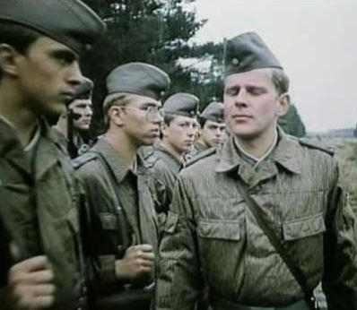

Dans la nuit du 12 au 13 août 1961, l’armée nationale est-allemande commence à bloquer les rues et les chemins de fer donnant accès à Berlin-Ouest. Le régime communiste est-allemand fait aussitôt bâtir un mur le long de la frontière qui atteindra plus de 165 kilomètres. À compter de cette date, des familles, des amis seront séparés de part et d'autre de cette frontière et fixe le sort de millions d'individus jusqu’au 9 novembre 1989.
« (…) Le mur de Berlin va représenter pendant près de 30 ans l'arbitraire politique, la partie la plus visible de l'oppression communiste et donne à la guerre froide son vrai visage. (…) il fut le théâtre de drames humains, de tensions politiques et un terrain de propagande tous azimuts. Personne n'a oublié le fameux "Ich bin ein Berliner" lancé tout près du mur par Kennedy, en juin 1963. 1»
Césure entre deux systèmes politiques, le Mur sera également un lieu de deuil car nombreux seront les victimes est-allemandes qui tomberont, en tentant de rejoindre l’Eldorado de l’ouest, sous les balles des Vopos-la police du peuple2.
Alors que le monde bipolaire semblait s’accommoder de cet état de fait durant des décennies, que le soir du 9 novembre 1989 le Mur de Berlin tombe. Des milliers de Berlinois de l’Est et de l’Ouest entrent dans l’histoire en escaladant les murs de béton, s’engouffrant dans les étroits points de passage de la frontière et s’attaquant au Mur de Berlin avec des burins et de marteaux.
Les images de cet événement historique planétaire ont été diffusées dans le monde entier et resterons à jamais gravées dans l’imaginaire populaire. Trente ans après, Berlin est une des capitales les plus prisées par la jeunesse européenne, et ils ne restent plus que quelques fragments et traces d’une époque déjà oubliée par bon nombre de nos jeunes générations. Aussi est-il indispensable de rappeler succinctement l’histoire de ce mur, des raisons de sa construction jusqu’à sa chute en 1989.
La Guerre froide
Avec le début de la Guerre froide commençant à opposer les anciens alliés de la Seconde Guerre mondiale, les Berlinois, dans leur ensemble, ont déjà dû surmonter une crise majeure par le blocus de Berlin imposé par les soviétiques entre 1948 et 1949. Après la mort de Joseph Staline, le fait de passer d'Est en Ouest ne semblait poser moins de tracas vers la fin des années 1950.
Malgré les contrôles, ce sont quotidiennement plusieurs milliers de Berlinois qui passent d’un secteur à l’autre en travaillant à Berlin-Ouest et habitent à Berlin-Est ou dans sa banlieue où le coût de la vie et de l'immobilier est plus favorable.
Problèmes économiques
Mais beaucoup de Berlinois en profitent pour fuir le secteur soviétique et s’installer à l’Ouest. Pour la République Démocratique Allemande, qui subit de plein fouet dans ces années d’après-guerre ce flot d'émigration croissant vers l’Ouest, ceci pose un problème économique majeur. Il menace l'existence même de la RDA en privant le pays d’une main-d'œuvre indispensable au moment de sa reconstruction et montrant à la face du monde leur faible adhésion au régime communiste.
Pour les autorités est-allemandes, la frontière avec Berlin est difficilement contrôlable. Comme l'émigration concerne particulièrement les jeunes actifs attirés par des salaires qui augmentent plus vite à l’Ouest qu’à l’Est. Le manque de main-d'œuvre, provoqué en grande partie par ces fuites à l'Ouest, conjugué à un important trafic de devises est néfaste à l'économie est-allemande qui se trouve en 1961 au bord de l’effondrement économique et social.
Problème militaire
Cette fuite des cerveaux et de la main-d’œuvre qualifiée, qui se fait durement ressentir, dépossède également la RDA d’un potentiel de cadres et de techniciens vital non seulement pour son économie mais aussi pour le recrutement de ses troupes en uniformes.
Car depuis la création de l’armée est-allemande l’engouement « patriotique » pour la « chose militaire », le service volontaire et l’attrait des « privilèges » inhérents à cette qualité, vanté par la propagande du Parti communiste est-allemand n’obtient en fait guère l’adhésion escomptée de la part de la jeunesse.
Peu enclins à entrer au service de l’armée de « l’État paysan et prolétarien», des dizaines de milliers de jeunes est-Allemands ont, depuis 1960, déjà fui vers Berlin-Ouest afin d’éviter tout service sous les armes. Aussi, avant même la construction du Mur, la police de la RDA surveille intensivement aux points d'accès à Berlin-Ouest ceux qu'elle désigne comme « contrebandiers » ou « déserteurs de la République ». Dès 1960, la Volkspolizei) et les Grenztruppen3- gardes-frontières reçoivent des instructions précises quant aux conditions d’ouverture du feu sur toute personne qui tenterait de franchir la frontière Est-Ouest afin de s’enfuir du « paradis socialiste ».
La construction du mur
« Les Occidentaux n’ont pas osé lever le petit doigt. Ils ont perdu la bataille de Berlin. S’il y a des familles séparées par les mesures qui ont été prises, elles n’ont qu’à se réunir de ce côté-ci. »
Erich Honecker. Pankow.
16 août 1961.
C’est le 13 août 1961, qu’à la stupeur des berlinois, que la porte de Brandebourg est transformée et ressemble à un camp militaire retranché. L'agence de presse de la RDA diffuse une déclaration solennelle enjointe par les pays frères :
« Les gouvernements du Pacte de Varsovie s’adressent à la Chambre du Peuple, au gouvernement de la RDA et à tous les travailleurs de la République démocratique allemande avec la proposition d’introduire à la frontière de Berlin-Ouest, le long des voies autour de toute la région de Berlin-Ouest, y compris sa frontière avec Berlin, un ordre qui assure une surveillance fiable et un contrôle efficace, visant l'activité subversive initié contre les pays du camp socialiste. »
Cet appel se concrétise par la pose initiale de grillages et de barbelés autour de Berlin-Ouest. C’est sous le nom de code « Muraille de Chine » qu’Ulbricht4 charge un certain Honecker5 d’organiser l’enfermement de la population allemande dans le secteur soviétique.
Plus de 13 000 membres des forces armées bloquent les rues et tous les moyens de transport entre les deux parties de la ville sont interrompus. En septembre 1961, les métros et le réseau ferré de banlieue de Berlin-Ouest continueront à circuler sous Berlin-Est sans cependant s'y arrêter car dorénavant les stations desservant le secteur oriental ayant été murées.
Ce dispositif est progressivement remplacé par un mur de briques, puis de béton qui devait devenir le tristement célèbre Mur de Berlin. Informés par leurs services de renseignement les occidentaux sont au courant d'un plan visant au verrouillage de Berlin-Ouest, mais sont surpris par son calendrier et son ampleur.
Mais, puisque leurs droits d'accès à Berlin-Ouest sont respectés, ils ne peuvent intervenir militairement et les puissances occidentales n’émettent que quelques protestations et remettront une note déclarante « comme illégale l’isolation de Berlin (sic) » mais rien de plus.
Selon Horst Sindermann, chef de la section agitation au Comité central de la SED en 1961 :
« Il s’agissait de la sauvegarde de la RDA. Nous avions des pertes énormes du fait de l’ouverture des frontières et nous n’aurions pas pu survivre ainsi très longtemps. (…) Nous ne voulions pas être saignés à blanc, nous voulions maintenir l’ordre démocratico-antifasciste qui existait en RDA. »
À compter de cette date le mur de Berlin deviendra le symbole visible de la frontière intérieure allemande, qui divisera dès lors physiquement la ville de Berlin et les deux Allemagnes.
Au fil du temps, cette construction comprendra « 2 » murs de plus de 3 mètres de haut qui seront gardés 24/24 par les Grenztruppen dont les unités seront réparties tout le long de la frontière germano allemande à ne pas confondre avec les Vopos qui étaient en charge des points de passage à la frontière.
Les Grenztruppen de la RDA
Ces troupes de frontières, qui sont dès lors les garants de la protection de l’inviolabilité des limites territoriales de la RDA, sont les héritières des unités paramilitaires chargées de surveiller les frontières extérieures de la zone d’occupation soviétique créée en 1946 puis de la frontière de la RDA dès sa création en 1949.
Devenue police des frontières-Grenzpolizei le 1er décembre 1952 elle relève dans un premier temps de l’autorité du ministère de l'Intérieur de la RDA (de mai 1952 à juin 1953) puis du ministère de la Sécurité de l'État (MfS).
C’est à la suite la construction du mur que la police des frontières est-allemande sera subordonnée au ministère de la Défense nationale et formera un commandement militaire en charge des frontières.
Avec l'introduction du service militaire obligatoire, les conscrits seront affectés au sein des troupes frontalières de la RDA. Pour ce faire des régiments seront formés et la sécurité frontalière sera assurée par sept régiments6 de gardes-frontières.
Du début des années 80 jusqu'au tournant et à la révolution pacifique de 1989, les Grenztruppen pouvait compter sur un effectif d’environ 44 000 hommes sous les armes. Le parti communiste est-allemand était néanmoins très méfiant à l’égard des conscrits qu’ils utilisaient. Afin d’éviter tout collusion avec des amis susceptibles de permettre à des proches à fuir la RDA des mesures drastiques dans l’organisation du travail furent mis en place par les agents de la sécurité d’État.
Ainsi aucun membre des Grenztruppen ne pouvait savoir à l’avance à quel endroit il serait de garde ou effectuerait une patrouille de contrôle et ne connaissait pas le nom du ou des autres gardiens qui l’accompagnerait pour les rondes ou les patrouilles. En outre, chacun se méfiait de l’autre car le « camarade » de patrouille était susceptible d’être un informateur de la Stasi7.
Évasions mortelles
Les troupes frontalières avait pour mission essentiel d'empêcher toute tentative d'évasion par tous les moyens et avaient reçu l’ordre de « tirer à vue » sur toute personne pénétrant dans la zone interdite.
Des découvertes récentes ont mis en lumière la responsabilité de l'État Est-allemand dans des exécutions de fugitifs civils ou militaires. Un ordre formel d’octobre 1973 adressé aux agents de la Stasi, infiltrés dans les unités de gardes-frontières, précise comment empêcher des soldats qui tenteraient une évasion vers l'Ouest :
« N'hésitez pas à faire usage de votre arme, même si la violation de la frontière concerne des femmes et des enfants, ce qui est une stratégie souvent utilisée par les traîtres 8»
Dans la triste histoire du mur de Berlin de nombreuses personnes seront abattus, avec ou sans sommation. Un nombre indéterminé d’allemands de l’Est seront ainsi victimes des tirs des gardes-frontières. Les premières balles mortelles seront tirées le 24 août 1961 sur Günter Litfin au cours d'une tentative d'évasion.
Parmi les victimes on compte aussi deux enfants âgés respectivement de 10 et 13 ans abattus en 1966, Chris Gueffroy quand à lui sera abattu à quelques mois seulement de la chute du mur le 5 février 1989 et sera la dernière victime d’un tir de garde-frontières9. Le nombre exact des victimes du Mur fait l'objet de controverses : il est en effet difficile à évaluer car les nouvelles victimes étaient passées sous silence en RDA10.
En souvenir de ces victimes du Mur, divers mémoriaux de types très différents ont été construits. Souvent d'initiative privée, elles avaient été mis en place par les proches avec des petites croix ou autres signes érigés en mémoire des proches abattus et que l'on trouvait en divers endroits de l'ex-frontière.
La municipalité avait décidé de créer un lieu de souvenir plus important. Dans le Mauer Park, ensemble commémoratif, un panneau recense 136 morts : 98 « fugitifs », 8 autres Allemands de l'Est, 22 Allemands de l'Ouest et 8 soldats. Quarante-deux sont des enfants ou adolescents.
« Wind of Change » 11
L'année 1989 est marquée dans l'ensemble de l'Europe par un vent de changement, notamment à l'Est, dans les États satellites de l'URSS. En effet, alors que les Soviétiques se retirent d'Afghanistan sans victoire, la Hongrie ouvre son Rideau de fer et la Pologne, en nommant à sa tête Tadeusz Mazowiecki, membre du syndicat Solidarnosc, s'achemine vers la démocratie.
Ce mouvement semble cependant ne pas atteindre l'Allemagne divisée. Durant l'été 1989, sous le prétexte de partir en vacances en Hongrie, 25 000 Allemands de l'Est rejoignent la RFA en profitant des frontières ouvertes en Hongrie et en Tchécoslovaquie.
En RDA, l'opposition au régime prend de l'ampleur, notamment à travers de nombreuses manifestations comme le 2 octobre à Leipzig, où 20 000 personnes descendent dans la rue. Le Parti communiste est-allemand tente alors de reprendre la main en se rénovant mais les manifestations continuent.
Le 7 octobre, de passage à Berlin-Est pour le quarantième anniversaire de la création de la RDA, le président de l'Union soviétique Mikhaïl Gorbatchev indique aux dirigeants de la RDA que le recours à la répression armée est exclu.
(Fin de la première partie – Suite et fin dans le numéro d’Octobre/Novembre)
A.W.
NOTES
1 Bernard Brigouleix, 1961-1989 Berlin - les années du mur, Paris, 2001.
2 La Volkspolizei était la police nationale de l'Allemagne de l'Est. Ses officiers étaient couramment nommés les VoPos. Formée à la fin de la Seconde Guerre mondiale, la Volkspolizei disposait d'officiers entraînés comme des soldats et utilisait divers moyens de répression pour dissuader les ressortissants de la RDA de se rendre à l'ouest.
3 Les troupes frontalières de la République démocratique allemande étaient une organisation militaire affectée principalement à la surveillance de la frontière entre la RFA et la RDA. Excepté l'Union soviétique, aucun autre pays du Pacte de Varsovie n'entretenait une force de garde-frontières aussi importante. L'équivalent ouest-allemand à l’époque est le Bundesgrenzschutz (Force fédérale de protection des frontières).
4 Walter Ulbricht, né le 30 juin 1893 et mort le 1er août 1973, est un homme politique communiste allemand, membre du Parti communiste d'Allemagne (KPD) puis du Parti socialiste unifié d’Allemagne (SED). Il fut l'un des principaux dirigeants de la République démocratique allemande (RDA), en tant que secrétaire général du SED et président du Conseil d'État.
5 Erich Honecker, né le 25 août 1912 et mort le 29 mai 1994, est un homme politique allemand, principal dirigeant de l'Allemagne de l'Est de 1971 à 1989. Il occupa les postes de secrétaire général du Parti socialiste unifié d'Allemagne (SED) ainsi que de président du Conseil d'État et de responsable du Conseil de défense nationale.
6 Chaque régiment comprenait cinq compagnies commandées directement avec le support d'un groupe de génie, de transmissions, du train, une batterie de mortiers et d'artillerie, un groupe de reconnaissance et un de lance-flammes, ainsi qu'une meute de chiens de garde et, en cas de besoin, une compagnie maritime ou fluviale et des compagnies de sécurité pour les points de passage.
7 Le ministère de la Sécurité d’État (Ministerium für Staatssicherheit, MfS), dit la Stasi (abréviation de Staatssicherheit), était le service de police politique, de renseignements, d'espionnage et de contre-espionnage de la République démocratique allemande créé le 8 février 1950. Sous tutelle du gouvernement de la RDA, la Stasi était désignée comme « le bouclier et le glaive du parti » par la propagande du régime.
8 Vincent Fertey, Les permis de tuer de la Stasi mis au grand jour, dans Le Figaro du 12-08-2007 et LeMonde.fr, Découverte d'un document polémique sur le mur de Berlin, 12.08.07.
9 Les allemands de l’est qui échappèrent aux tirs mais qui furent arrêtés étaient condamnés jusqu'à deux ans de prison en tant que « déserteurs de la république ». La peine dépassait en général cinq ans si le fugitif dégradait les installations frontalières, était armé, soldat ou détenteur de secrets.
10 D'après des recherches de la collectivité berlinoise de travailleurs « Collectif du 13 Août », 1 135 personnes y ont laissé la vie. La Staatsanwaltschaft (bureau du Procureur général) de Berlin en a dénombré 270 où on a pu démontrer un acte de violence de la RDA. Le Zentrale Ermittlungsgruppe für Regierungs- und Vereinigungskriminalität (Groupe de recherches central sur la criminalité du gouvernement et de la réunification) ne recense que 421 morts susceptibles d'être imputées aux forces armées de la RDA. D'autres sources indiquent 125 morts à Berlin.
11 Wind of Change est généralement connue comme un des symboles de la réunification de l'Allemagne et de la fin du rideau de fer. Le groupe allemand Scorpions a reçu de nombreux honneurs et distinctions pour cette chanson. Ils ont aussi été invités en 1999 à jouer la chanson lors de la cérémonie qui a eu lieu pour célébrer les dix ans de la chute du mur de Berlin.
Partager cette page